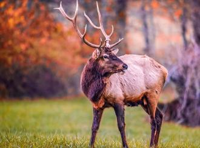
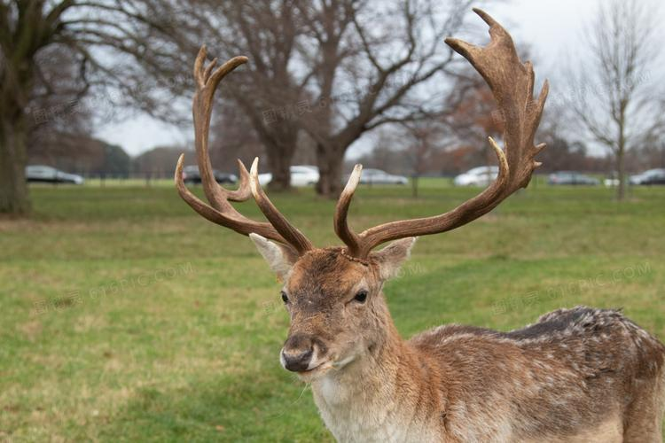

麋鹿
麋鹿（学名：Elaphurus davidianus）是鹿科、麋鹿属唯一的鹿类动物。因为它头脸狭长像马、角像鹿又与其它鹿略有不同、蹄子宽大像牛、尾细长像驴，因此又名四不像。它的角形独特，形状与其它鹿的犄角正好相反，前杈再分小杈，而后杈几乎不分叉。头大，吻部狭长，鼻端裸露部分宽大，眼小，眶下腺非常显著。四肢粗壮，主蹄宽大、多肉，有很发达的悬蹄，行走时带有响亮的磕碰声。麋鹿喜好沼泽湿地生境，以青草和水草为食物。性好合群，善游泳，喜欢以嫩草和水生植物为食。夏季求偶发情，比其它大多数鹿类都早一个季度。

百科
麋鹿曾广布于东亚地区，后来由于自然气候变化和人为因素，在汉朝末年就近乎绝种，最后的麋鹿种群残存于长江中下游湿地。元朝时，为了供游猎，残余的麋鹿被捕捉运到皇家猎苑内饲养。到19世纪时，只剩在北京南海子皇家猎苑内一群。在西方发现后不久被八国联军捕捉并从此在中国消失。直到1898年被英国购买并繁殖到255头，并在1983年将部分个体送回中国。之后有更多的麋鹿回归家乡，并有部分被放生野外。

知识拓展
麋鹿是一种大型食草动物，体长150-200厘米，尾长60-75厘米。 雄性肩高122-137厘米，雌性70-75米厘米，体形比雄性略小。一般体重120-180千克，成年雄性体重可达250千克，初生仔12千克左右。夏季体毛为赤锈色，颈背上有一条黑色的纵纹，腹部和臀部为棕白色。9月以后体毛被较长而厚的灰色冬毛所取代。